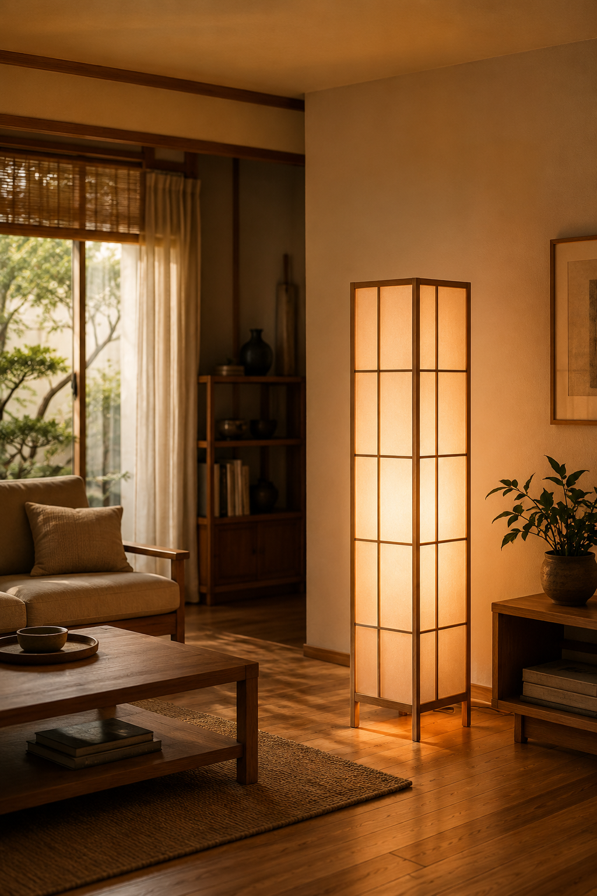
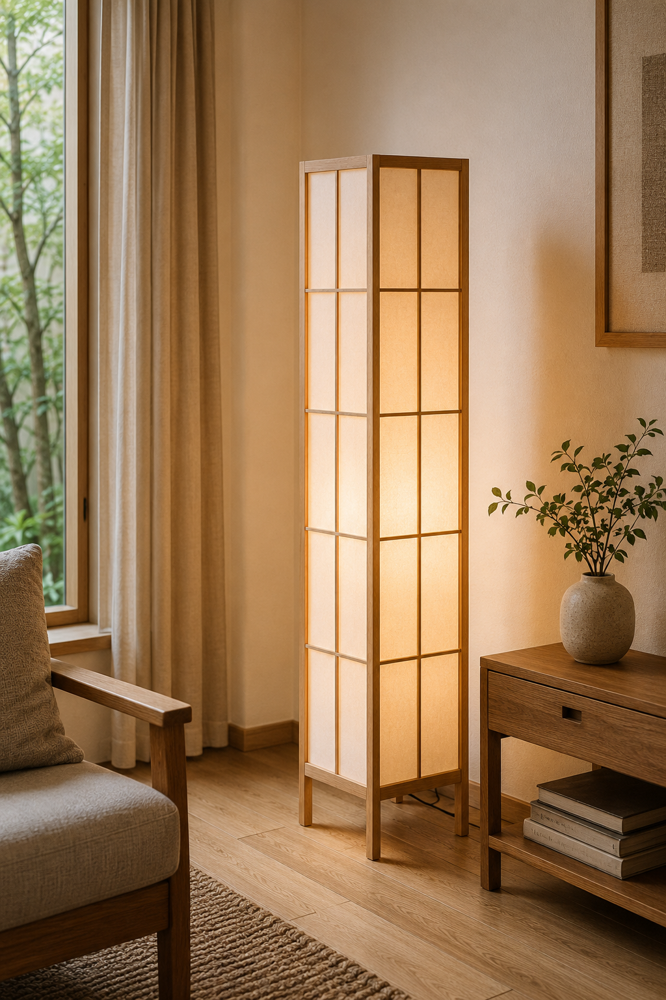
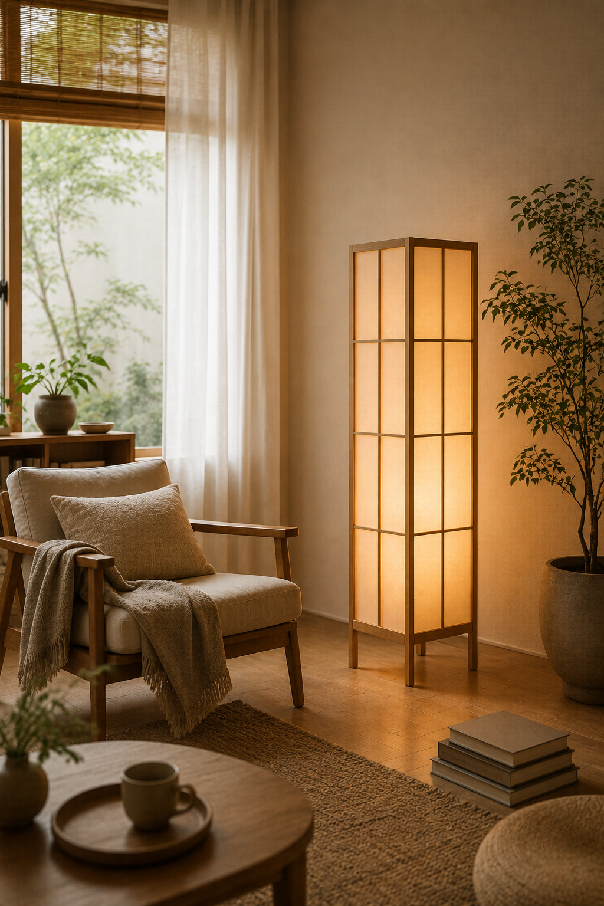

Lighting
Japandi Ceiling Lights
The fixture that sets the tone for the whole room. Flush mounts, paper pendants, and how to size one for your ceiling.
Read the guideJapandi Lighting Guide
Bring soft light and timeless Japanese style into your home.
Compare the 3 Best Picks
| Rank | Price range | Our rating | Key features |
|---|---|---|---|
| 1. Best Overall | $60 – $90 | ★★★★★ | Washi-style shade, tall wooden frame, warm even glow |
| 2. Best Value | $40 – $60 | ★★★★☆ | Linen-look fabric shade, easier to clean, everyday use |
| 3. Budget Pick | Under $40 | ★★★☆☆ | Compact size, good for a small corner or a first lamp |
Ratings are our own editorial picks. Price ranges are general guidance for this type of lamp, not live prices — always check the current price on Amazon.
Best Overall
If you only buy one lamp, start here. A tall wooden frame with a washi-style shade spreads a soft, even glow across a corner, so the room feels calm rather than spotlit. The narrow base slips beside a sofa without crowding the space.
Best for: anyone who wants one lamp that sets the mood of a whole living room, and cares more about warmth than brightness.
Check Price on AmazonBest Value

A linen-look shade gives a similar softness for less. The fabric hides dust better than paper and can be wiped down, which matters in a room you use every day. Expect a slightly warmer, less crisp light than a true washi shade.
Best for: a busy living room where the lamp gets used daily and needs to be practical as well as pretty.
Check Price on AmazonBudget Pick

A smaller, lower-cost option for a first lamp, a bedroom corner, or a rented apartment. The light does not reach as far as a full-height lamp, so it works best as a second light beside a chair rather than the only light in the room.
Best for: renters, bedrooms, and anyone testing the style before spending more.
Check Price on AmazonA standing lamp with a paper or fabric shade set in a wooden frame, inspired by traditional Japanese shoji screens. The shade diffuses the bulb so the room gets a soft, even glow instead of a bright spot of light.
Paper shades are more delicate than fabric or glass, but they hold up well in normal use as long as they are not knocked over or rubbed against. If you have pets or small children, a linen-look fabric shade is usually the safer choice.
A warm white LED bulb around 2700K keeps the glow soft and close to candlelight. LED also runs cool, which matters with a paper shade. Check the maximum wattage printed on the lamp before fitting a bulb.
Yes. The diffused light of a shoji lamp is gentle in the evening, which makes it a popular bedroom choice. Look for a foot switch or cord switch so you can turn it off without getting up.
A corner is usually best, since the light bounces off two walls and fills the room evenly. Beside a sofa, next to a reading chair, or at the end of a hallway also works well. Keep the shade away from curtains and walkways.
Our Final Recommendation
Across all three picks, the washi-shade floor lamp is the one that changes how a room feels. It gives the softest, most even light, the wooden frame suits almost any Japandi or minimalist space, and the slim base fits where a bulkier lamp will not. If you are choosing just one, choose this.
Check Price on AmazonOther rooms and layers of light, in the same calm, minimal style.
Lighting
The fixture that sets the tone for the whole room. Flush mounts, paper pendants, and how to size one for your ceiling.
Read the guideLighting
Height without bulk. What to put in the corner beside a low sofa, and the shapes that suit a small room.
Read the guideLighting
The smallest layer of light. Shade materials, bulb warmth, and the right height for a nightstand or console.
Read the guideFurniture
The piece everyone looks at. Shape, height and clearance, wood finishes, and how to style one without clutter.
Read the guideFurniture
The room's largest piece. Length per seat, the clearance chairs need, and the wood finishes that last.
Read the guideDecor
The largest surface in the room. Natural fibres, the size that actually fits, and where to place one.
Read the guideDecor
Neutral colors, the right size for your wall, and framed canvas versus paper prints.
Read the guidePrices and availability may change — please check the latest details on Amazon.